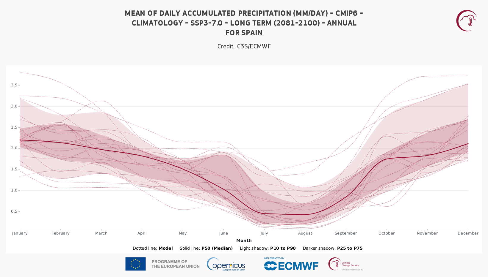
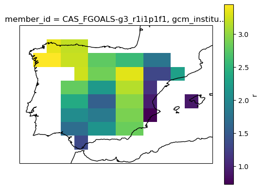
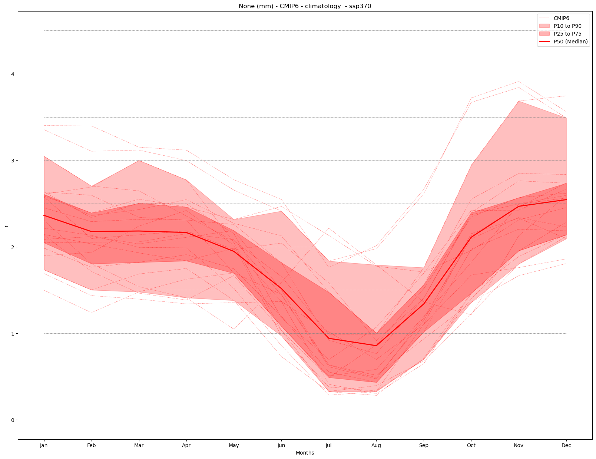
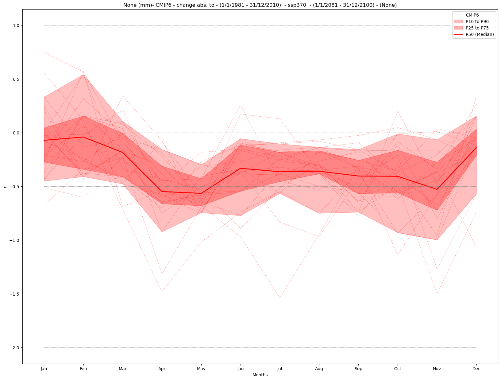
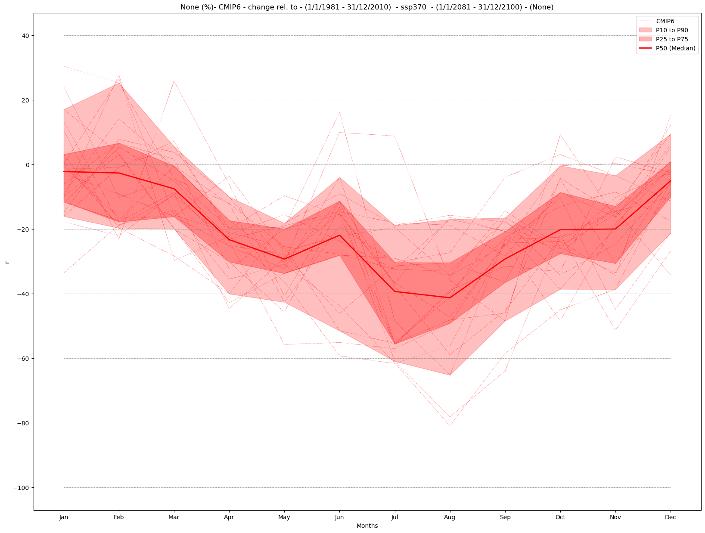
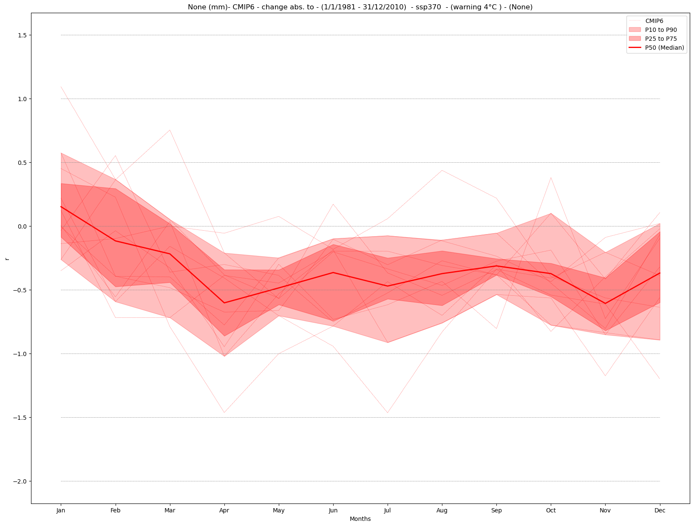

2.4. Annual Cycle#
This Jupyter Notebook reproduces the annual cycle product from the C3S Atlas.
The annual cycle plot displays the regionally aggregated monthly climatologies for the selected variable and period. For climate projections it displays the regionally aggregated monthly climatologies of the selected period for the raw values or the changes (anomalies relative to the selected baseline in this case) for all the simulations forming the ensemble, as well as the ensemble median. Detailed (percentile) information is provided by hovering the pointer over the individual months.
The figure below represents the annual cycle of precipitation for CMIP6 projections. It can be visualized in the C3S Atlas using the following Permalink

2.4.1. Load Python packages and clone and install the c3s-atlas GitHub repository from the ecmwf-projects#
Clone (git clone) the c3s-atlas repository and install them (pip install -e .).
Further details on how to clone and install the repository are available in the requirements section
import xarray as xr
import glob
import os
from datetime import date
import numpy as np
from pathlib import Path
import cdsapi
import matplotlib.pyplot as plt
import cartopy.crs as ccrs
from c3s_atlas.utils import (
season_get_name,
extract_zip_and_delete,
)
from c3s_atlas.customized_regions import (
Mask
)
from c3s_atlas.analysis import (
monthly_weighted_average,
)
from c3s_atlas.products import (
annual_cycle,
)
from c3s_atlas.GWLs import (
load_GWLs,
select_member_GWLs,
get_mean_data_by_months
)
2.4.2. Download climate data with the CDS API#
To reduce data size and download time, a geographical subset focusing on a specific area within the European region (Spain) is selected.
cdsapi_url= "https://cds.climate.copernicus.eu/api"
cdsapi_key= ""
c = cdsapi.Client(url=cdsapi_url, key=cdsapi_key)
⚠️ Warning: Exposed API Credentials
For security reasons, it is not recommended to hardcode your Copernicus Climate Data Store (CDS) API credentials — such as
cdsapi_urlandcdsapi_key— directly in notebooks.Instead, it is best to store them securely in a
.cdsapircfile located in your home directory.📄 More info: CDS API - How to use the API
project = "CMIP6"
scenario = "ssp370"
var = 'r'
dest = Path('./data/CMIP6') # directory to download the files
os.makedirs(dest, exist_ok=True)
Download historical data#
filename = 'r_CMIP6_historical_mon_185001-201412.zip'
dataset = "multi-origin-c3s-atlas"
request = {
"origin": "cmip6",
"experiment": "historical",
"period": "1850-2014",
"variable": "monthly_precipitation",
"bias_adjustment": "no_bias_adjustment",
'area': [44.5, -9.5, 35.5, 3.5]
}
c.retrieve(dataset, request).download(dest / filename)
extract_zip_and_delete(dest / filename)
Download SSP scenario#
filename = 'r_CMIP6_ssp370_mon_201501-210012.zip'
dataset = "multi-origin-c3s-atlas"
request = {
"origin": "cmip6",
"experiment": "ssp3_7_0",
"period": "2015-2100",
"variable": "monthly_precipitation",
"bias_adjustment": "no_bias_adjustment",
'area': [44.5, -9.5, 35.5, 3.5]
}
c.retrieve(dataset, request).download(dest / filename)
extract_zip_and_delete(dest / filename)
Concatenate historical and SSP scenarios#
Note that the historical and SSP scenarios may have a different number of members. Here, common members from the historical and SSP scenarios are concatenated into a single xarray.Dataset to facilitate their use going forward.
ds_hist = xr.open_dataset(dest / "r_CMIP6_historical_mon_185001-201412.nc")
ds_sce = xr.open_dataset(dest / "r_CMIP6_ssp370_mon_201501-210012.nc")
mem_inters = np.intersect1d(ds_hist.member_id.values, ds_sce.member_id.values)
ds_hist = ds_hist.isel(member = np.isin(ds_hist.member_id.values, mem_inters))
ds_sce = ds_sce.isel(member = np.isin(ds_sce.member_id.values, mem_inters))
ds = xr.concat([ds_hist, ds_sce], dim = 'time')
Define attributes#
actual_year = date.today().year
unit = ds[var].units
attrs = {
"project" : project,
"scenario": scenario,
"variable": var,
"unit" : unit
}
Select region#
The Spanish region is used as an example from the predefined European countries regions to visualize the products. See customized_regions.ipynb for more options and information.
mask = Mask(ds).European_contries(['ESP'])
filtered_ds = ds.where(mask)
# mean spatial map for one member
ax = plt.axes(projection=ccrs.PlateCarree()) # Use PlateCarree for lat/lon projections
filtered_ds[var].isel(member=0).mean(dim='time').plot(ax=ax, transform=ccrs.PlateCarree())
ax.coastlines()
plt.show()

2.4.3. Climatology and change#
The monthly_weighted_average function calculates the monthly spatial mean of a dataset, weighted by the cosine of the latitude. This is a common approach to account for the varying size of grid cells at different latitudes, as areas near the poles have smaller grid cells than those near the equator. By applying this weighting, the function ensures that each grid cell contributes appropriately to the overall average, regardless of its geographical location.
a) Climatology#
# calculate annual cycle (climatology)
mode = 'climatology'
period = slice('1/1/2081','31/12/2100')
annual_cycle_ds = monthly_weighted_average(filtered_ds, var, mode = mode)
annual_cycle_plot = annual_cycle(annual_cycle_ds, var, attrs, mode = mode, period = period)

b) Absolute change#
# calculate annual cycle (abs)
mode = 'change'
diff = 'abs'
period = slice('1/1/2081','31/12/2100')
baseline_period = slice('1/1/1981','31/12/2010')
annual_cycle_abs_ds = monthly_weighted_average(filtered_ds, var, mode = mode, diff = diff,
baseline_period = baseline_period, period = period)
annual_cycle_plot = annual_cycle(annual_cycle_abs_ds, var, attrs,
mode = mode, diff = diff,
baseline_period = baseline_period, period = period)

c) Relative change#
# calculate annual cycle (rel)
mode = 'change'
diff = 'rel'
period = slice('1/1/2081','31/12/2100')
baseline_period = slice('1/1/1981','31/12/2010')
annual_cycle_rel_ds = monthly_weighted_average(filtered_ds, var, mode = mode, diff = diff,
baseline_period = baseline_period, period = period)
annual_cycle_plot = annual_cycle(annual_cycle_rel_ds, var, attrs,
mode = mode, diff = diff,
baseline_period = baseline_period, period = period)

2.4.4. Global Warming Levels#
Here, the annual cycle is displayed for a specific Global Warming Level (GWL). To achieve this, the 20-year period in which each ensemble member reaches the chosen GWL is selected. The annual cycle is then shown, representing either climatology or change for this specific period and region (Spain in this notebook).
These periods are calculated in the notebook GWLs.ipynb for CMIP5 and CMIP6. For CORDEX, the results from the driving CMIP5 models are used.
GWL = '4'
baseline_period = slice('1/1/1981','31/12/2010')
#Load the data and get the intersection of the members
GWLs_ds = load_GWLs(project)
GWLs_members_with_period = select_member_GWLs(filtered_ds, GWLs_ds, project, scenario, GWL)
[GWL_data, filtered_GWLs_ds] = get_mean_data_by_months(filtered_ds, GWLs_members_with_period)
Analysis and plot#
mode = 'change'
diff = 'abs'
annual_cycle_GWLs = monthly_weighted_average(filtered_GWLs_ds, var, mode = mode, diff = diff,
baseline_period = baseline_period, ds_GWLs = GWL_data)
annual_cycle_plot = annual_cycle(annual_cycle_GWLs, var, attrs, mode = mode, diff = diff,
baseline_period = baseline_period, GWLs = GWL)
